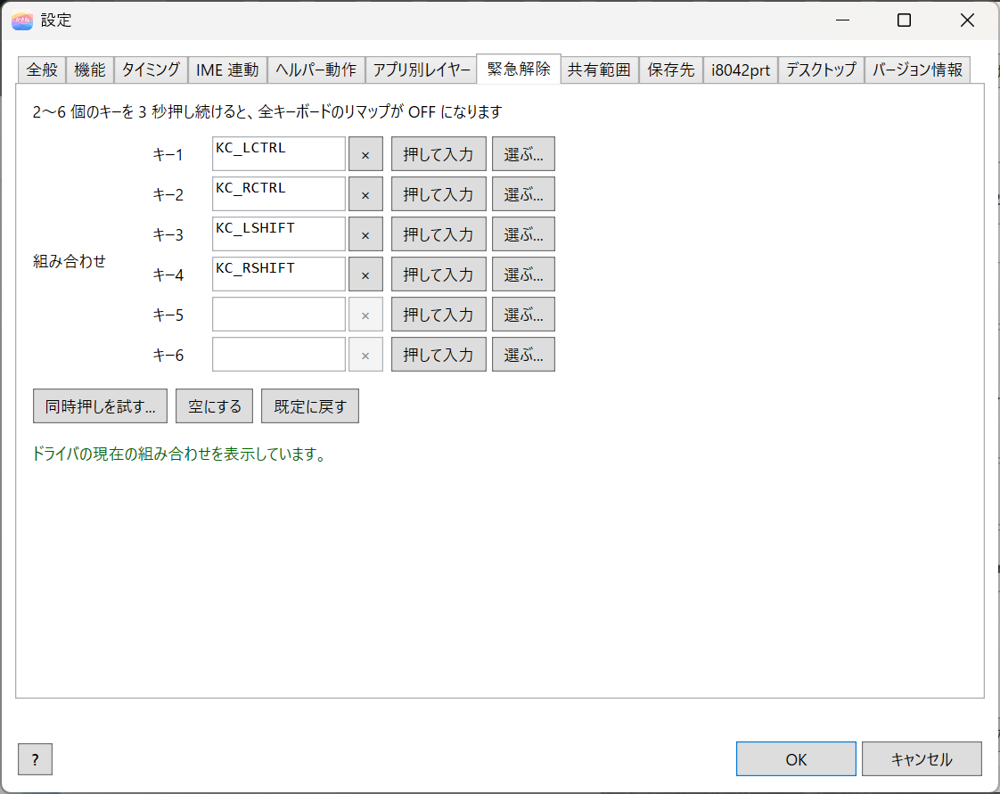
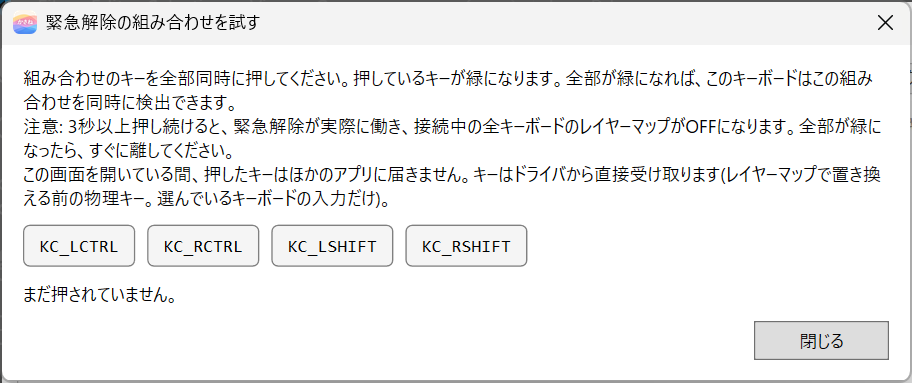
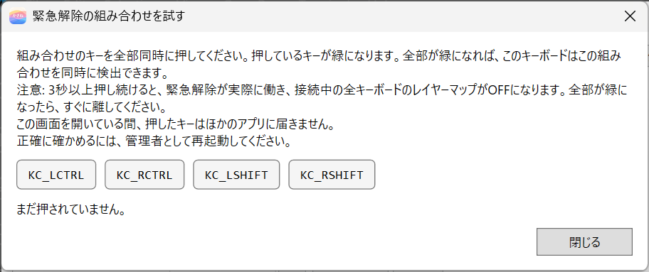
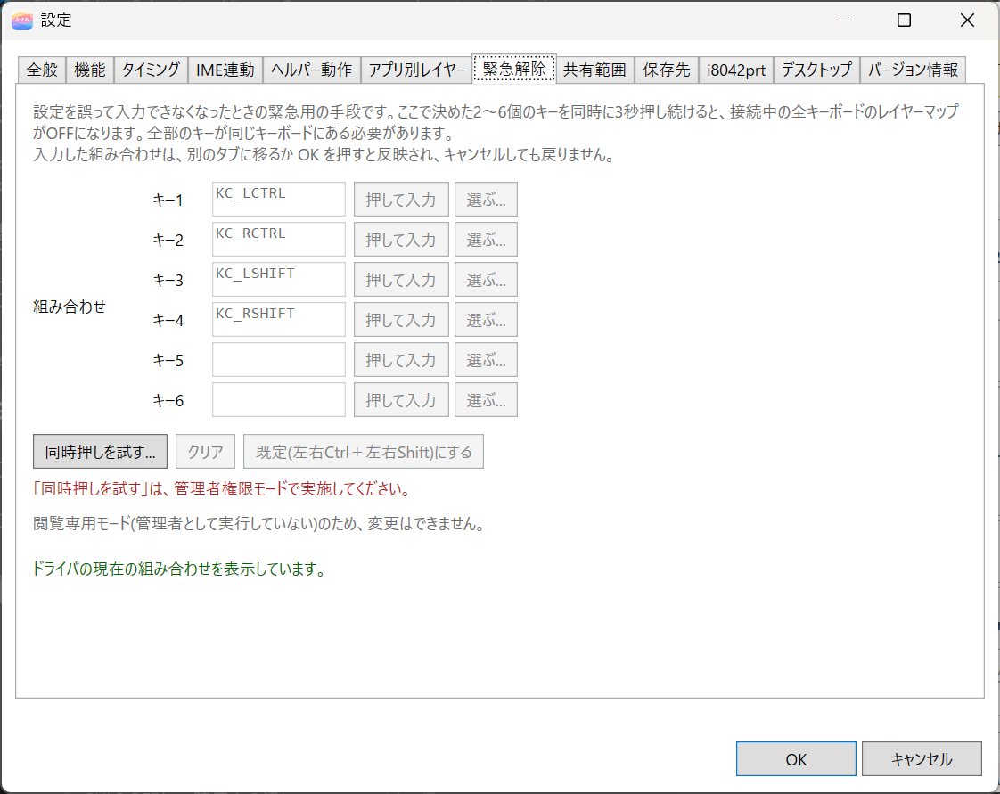

7. 緊急解除
設定を誤って、キーボードから入力できなくなったときの、緊急用の手段です。決めておいた組み合わせのキーを、同時に 3 秒間押し続けると、接続中のすべてのキーボードが OFFになります。
既定の組み合わせは、左右の Ctrl と左右の Shift（4 つのキー）です。
解除したあとは、エディタで設定を直し、キーボードに適用(ON) を押すと、リマップが戻ります。
組み合わせを変える
エディタの 設定... を開き、緊急解除 タブを選びます。管理者として起動していないときは、閲覧専用モードのため、欄とボタンは押せません。

- 組み合わせは、キー-1 から キー-6 の欄に入れる、2〜6 個のキーで決めます。組み合わせのキーは、すべて同じキーボードにある必要があります。
- 各欄の 押して入力 を押すと、次に押したキーが入ります。選ぶ... で、画面上のキーボードや一覧から選ぶこともできます。キー名を手で書く必要はありません。
- 空にする で、全部の欄を空にします。
- 既定に戻す で、既定の組み合わせ（左右の Ctrl と、左右の Shift）を入れます。
- 入れた組み合わせは、別のタブに移るとき、または OK を押したときに反映されます。反映したあとは、設定ダイアログを キャンセル で閉じても元に戻りません。欄が全部空なら、変更しません。
- キーが 1 個だけ、同じキーの重複、単純なキー以外が入っているときは、エラーになり、タブを移れません。
組み合わせは、ドライバ全体で 1 つです。
同時押しを試す
同時押しを試す... を押すと、「緊急解除の組み合わせを試す」の画面が開きます。そのキーボードが、組み合わせのキーを同時に検出できるかを確かめられます。

組み合わせのキーが、画面に並びます。それらをすべて押すと、押しているキーが緑になります。全部が緑になったら、成功です。閉じる で終わります。この画面を開いている間、押したキーはほかのアプリに届きません。3 秒たつと、実際に解除が働いてしまうので、緑になったらすぐに離してください。
管理者のとき
キーを、ドライバから直接受け取るので、正確に確かめられます。
管理者でないとき
低レベルキーフックで確認するため、選んでいるキーボードレイアウトによっては、正常に取れないキーがあります。タブと確認の画面に、「管理者として再起動してください」と出ます。

管理者でないときは、タブの欄とボタンも押せません。

4 つのキーを同時に押せないキーボード
キーボードによっては、4 つのキーを同時に押せません。これは各キーボードの同時押しの上限で、kasane の問題ではありません。4 つとも押せるキーボードもあります。
4 つ押せないキーボードを使うときは、押せる数の組み合わせ（例: 左 Ctrl、左 Shift、右 Ctrl の 3 つ）に変えてください。
実際に解除が働いたとき
接続中のすべてのキーボードが OFF になります。エディタを開き、ステータス欄の状態の印が OFF になっていることを確かめてください。設定は、ドライバに残っています。